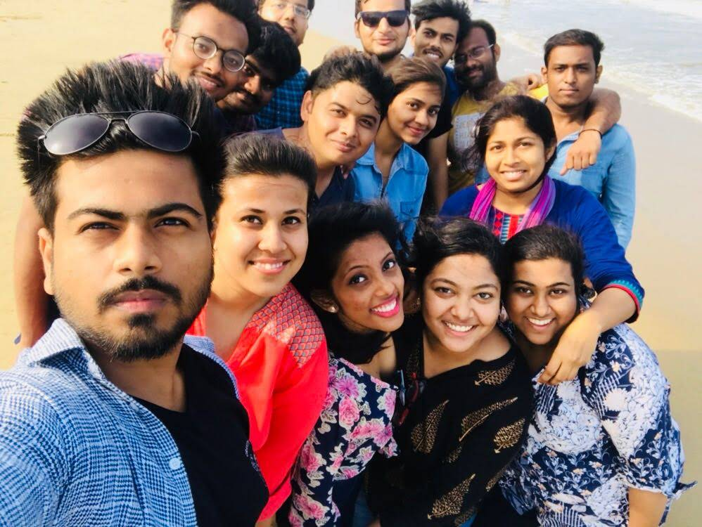

<!--
  Generated template for the DashboardPage page.

  See http://ionicframework.com/docs/components/#navigation for more info on
  Ionic pages and navigation.
-->
<ion-header>

  <ion-navbar>
    <ion-title>dashboard</ion-title>
  </ion-navbar>

</ion-header>


<ion-content padding >
  <ion-grid>
    <ion-row style="width: 70%; margin-left: 40px;margin-bottom: 20px">
      
          
          <span style="margin-left: 35px;margin-top: 8px"><button type="button" class="btn " (click)="goToEmpDetail()" style="background-color:rgba(5, 5, 5, 0.541);color:white">Empoloyee Details</button></span>

    </ion-row>
    <ion-row style="width: 70%; margin-left: 40px;margin-bottom: 20px">
      
        
        <span style="margin-left: 35px;margin-top: 8px"><button type="button" style="margin-right: 200px;background-color:rgba(5, 5, 5, 0.541);color:white"class="btn" (click)="goToMgrDetails()"  >Manager Details</button></span>

  </ion-row>
  <ion-row  style="width: 70%; margin-left: 40px;margin-bottom: 20px">
      
      
      <span style="margin-left: 35px;margin-top: 8px"><button type="button" class="btn" (click)=" goToPendinglog()"  style="background-color:rgba(5, 5, 5, 0.541);color:white">Reporting Employees</button></span>
  </ion-row>
  <ion-row>
    <ion-col style="background-color: rgba(0, 0, 0, 0.479);width: 50%">

    </ion-col>
    <ion-col  style="background-color: rgba(0, 0, 0, 0.479)">
      
    </ion-col>
  </ion-row>
  </ion-grid>
</ion-content>
